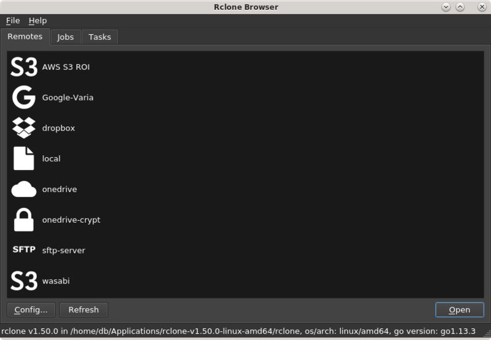

En su día expliqué en el blog como compilar Rclone Browser. Ahora es mucho más sencillo ya que disponemos de archivos AppImage para instalarlo y lo mejor de todo, para arquitectura 32 y 64bits, así como ARM para Raspberry Pi.

Voy a explicar como instalar el AppImage y recuerda que este método es válido para cualquier AppImage.
En mi caso me gusta crear un directorio en la raíz del home llamada appimagey dentro de esta, voy dejando todas las aplicaciones AppImage.
Primero necesitas tener instalado rclone. Rclone Browser es una interfaz gráfica para rclone.
sudo curl https://rclone.org/install.sh | sudo bash
Ya tenemos rclone a la última
Descarga desde la última release en GitHub el archivo para el sistema que vayas a utilizar.
Descargas
En linux, para instalar el AppImage es tan sencillo como:
chmod a+x archivo.AppImage
Tomando de ejemplo la versión rclone browser 1.8.0, sería...
chmod a+x rclone-browser-1.8.0-a0b66c6-linux-x86_64.AppImage
./archivo.AppImage
En el ejemplo de la versión 1.8.0
./rclone-browser-1.8.0-a0b66c6-linux-x86_64.AppImage
a mi personalmente me gusta renombrarlo como rclone-browser.AppImage
mv rclone-browser-1.8.0-a0b66c6-linux-x86_64.AppImage rclone-browser.AppImage
ahora ejecutaríamos de un modo más sencillo:
./rclone-browser.AppImage
Publicado por Angel el Thursday 01 April del 2021
También te puede interesar:
Powered by org-bash-blog
Written in OrgMode with Emacs and converted to HTML with Pandoc

Este obra está bajo una licencia de Creative Commons Reconocimiento-NoComercial-CompartirIgual 4.0 Internacional.